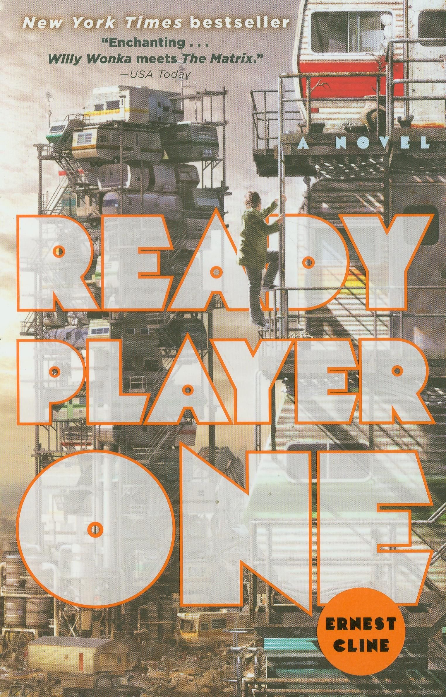

READY PLAYER ONE is a book that brings two different media—videogames and literature—together into a crazy 3D explosion (in your mind!). Plus, it bridges the generation gap between the 1980s and now,  putting all of those pictures of your parents (or yourself) in neon leg-warmers, side-ponytails, and way too many accessories into context. But get this: Ready Player One not only gets its inspiration from the games of the '80s, but the movies and music, too. This is a book with a retro, synthesized soundtrack and a breakneck adventure plot straight out of your favorite classic movies, like Indiana Jones, Star Wars, and Ladyhawke.It follows Wade Watts, a teenager in 2045, and his quest for fame and fortune. He's hooked on the OASIS, an uber-realistic MMO game that has taken the world by storm. Its deceased creator, James Halliday, has put his entire estate up as the prize for a contest that requires fast reflexes, a great memory for film quotes, and an encyclopedic knowledge of 1980s trivia. Are you game? If you 're a full-fledged geek or even just a geek at heart, what are you waiting for? Pick up Ready Player One today and start the adventure. The OASIS is waiting.
Meet our narrator, Wade Owen Watts: initials W.O.W.
Wow, that's a great name for a superhero, isn't it? He's the hero of our story, and like most superheroes, he had a tragic upbringing right out of the most melodramatic afterschool special.
 friendlessness. No wonder the kid has a need to escape into the OASIS, the MMO game so real that it makes you forget reality.Without friends or family, Wade finds other passions: namely videogames, music, and movies of the 1980s. Does Wade know he's imitating his idol? And why is this creepy old dude his idol anyway? Could it have something to do with the fact that Wade lacks a father figure? Or is he just the world's biggest fanboy?
friendlessness. No wonder the kid has a need to escape into the OASIS, the MMO game so real that it makes you forget reality.Without friends or family, Wade finds other passions: namely videogames, music, and movies of the 1980s. Does Wade know he's imitating his idol? And why is this creepy old dude his idol anyway? Could it have something to do with the fact that Wade lacks a father figure? Or is he just the world's biggest fanboy?
It's speculated that he had Asperger's syndrome or lay somewhere on the autism spectrum, but this theory isn't really explored further in the book. Whatever the reason, his self-imposed isolation ended up giving him the time and motivation to invent the OASIS and the greatest treasure hunt the world has ever seen. So though he's gone, his impact on the book is pretty big.
ERNEST CLINE lives in Austin, Texas, where he devotes a large portion of his time to geeking out. This is his first novel.